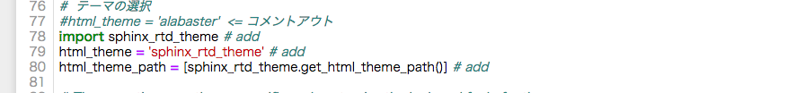
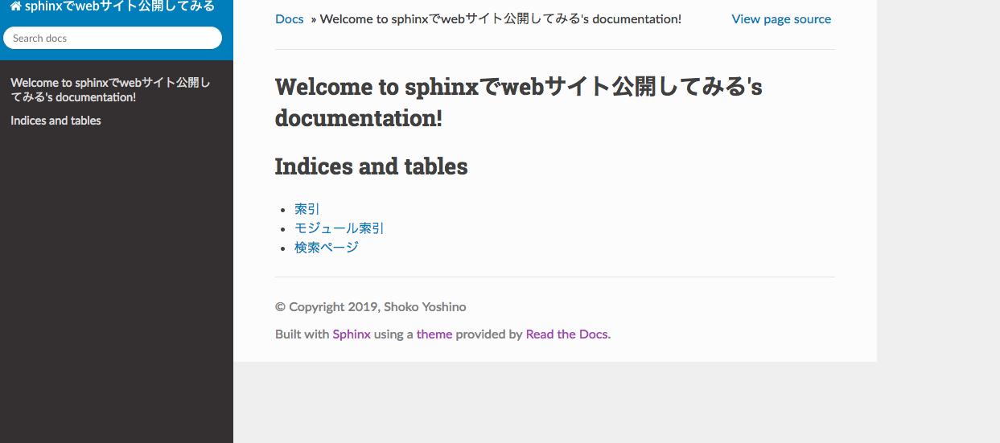

Themeを変更する¶
今回は,Themeを変更してみます．
sphinx_rtd_themeという，わりと使われているthemeに変更します.
それぞれインストールは以下のようにします.
pip install sphinx_rtd_theme
インストールしたら,変更の設定を sourceディレクトリ内のconf.pyに書き込みます.
以下のように変更してください

設定が終わったら,
python -m sphinx source/ build/
make html
と入力し，
open build/index.html
みてみましょう.
下のように,themeの変更が反映されているはずです．
